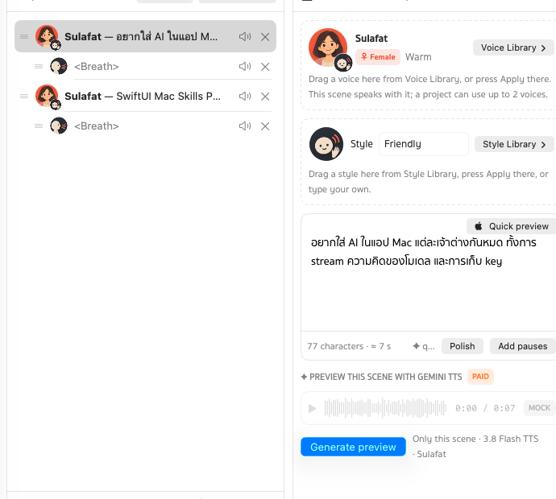
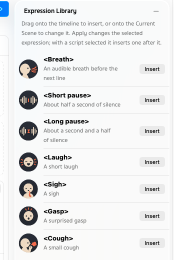
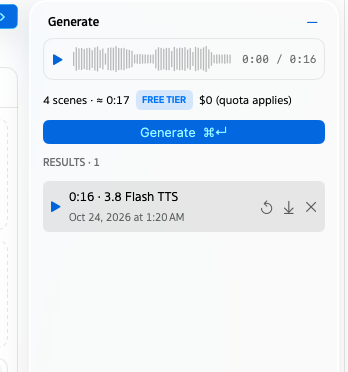

A voice-over studio that keeps your workสตูดิโอพากย์เสียงที่ไม่ทำงานของคุณหาย
No more losing a good take when you leave the playground. Projects save themselves, and every take stays in Results.ไม่ต้องเสีย take ดีๆ เพราะปิดหน้า playground อีกต่อไป โปรเจกต์บันทึกเอง และทุก take อยู่ใน Results
A script you can rearrangeบทที่จัดเรียงใหม่ได้
Every line and every pause is a scene. Drag to reorder, mute a scene to leave it out of the take, and give each line its own voice and style.ทุกบรรทัดและทุกช่วงหยุดคือหนึ่งฉาก ลากสลับลำดับได้ ปิดเสียงฉากที่ไม่อยากให้อยู่ใน take และกำหนดเสียงกับสไตล์ให้แต่ละบรรทัดได้

2,000+ Gemini voicesเสียง Gemini กว่า 2,000 แบบ
The same library as Google AI Studio; the 30 with portraits come first. Filter ♂ ♀, search, ♥ the ones you use most and see ✓ the ones in this project.คลังเดียวกับ Google AI Studio · 30 เสียงที่มีรูปอยู่ด้านบนก่อน กรอง ♂ ♀ ค้นหา กด ♥ เสียงที่ใช้บ่อย และดู ✓ เสียงที่ใช้ในโปรเจกต์นี้
Two voices in one takeสองเสียงใน take เดียว
Gemini speaks a conversation in one go: give a line the other voice and it becomes the second speaker.Gemini พูดเป็นบทสนทนาได้ในครั้งเดียว แค่ให้บรรทัดนั้นใช้อีกเสียง ก็กลายเป็นผู้พูดคนที่สอง
Breaths, pauses and laughsหายใจ เว้นจังหวะ และหัวเราะ
Drag an expression between two lines — breath, short or long pause, laugh, sigh, gasp, cough — and repeat it up to ×10.ลาก expression ไปวางระหว่างบรรทัด ทั้งหายใจ เว้นสั้น เว้นยาว หัวเราะ ถอนหายใจ ตกใจ ไอ และให้ซ้ำได้สูงสุด ×10

Hear it before you payฟังก่อนจ่าย
Quick preview reads the line with your Mac's voices, free and instant. Generate preview makes just one scene with Gemini. Only then the whole take.Quick preview อ่านบรรทัดด้วยเสียงของ Mac ฟรีและทันที Generate preview สร้างเสียงจริงแค่ฉากเดียว แล้วค่อยสร้างทั้ง take
# Rami · Friendly
Still editing /etc/hosts in vim?
<short pause>
Hosts Manager does it in one click.
# Mali · Calm
<breath> ×2
Every take keptเก็บทุก take
Results keeps every take. Play it with its waveform, download the WAV, or bring its timeline back. History keeps your last 30 edits per project.Results เก็บทุก take ไว้ เล่นพร้อมดู waveform ดาวน์โหลด WAV หรือดึงไทม์ไลน์ของ take นั้นกลับมาได้ ส่วน History เก็บการแก้ไข 30 ครั้งล่าสุดของแต่ละโปรเจกต์

Make it yoursปรับให้เป็นสไตล์คุณ
Liquid Glass on macOS 26 and Sukhumvit Set type. Light, Dark or System, 16 accent colours and 8 gradient themes.Liquid Glass บน macOS 26 และฟอนต์ Sukhumvit Set เลือก Light, Dark หรือตามระบบ สี accent 16 สี และธีม gradient 8 แบบ